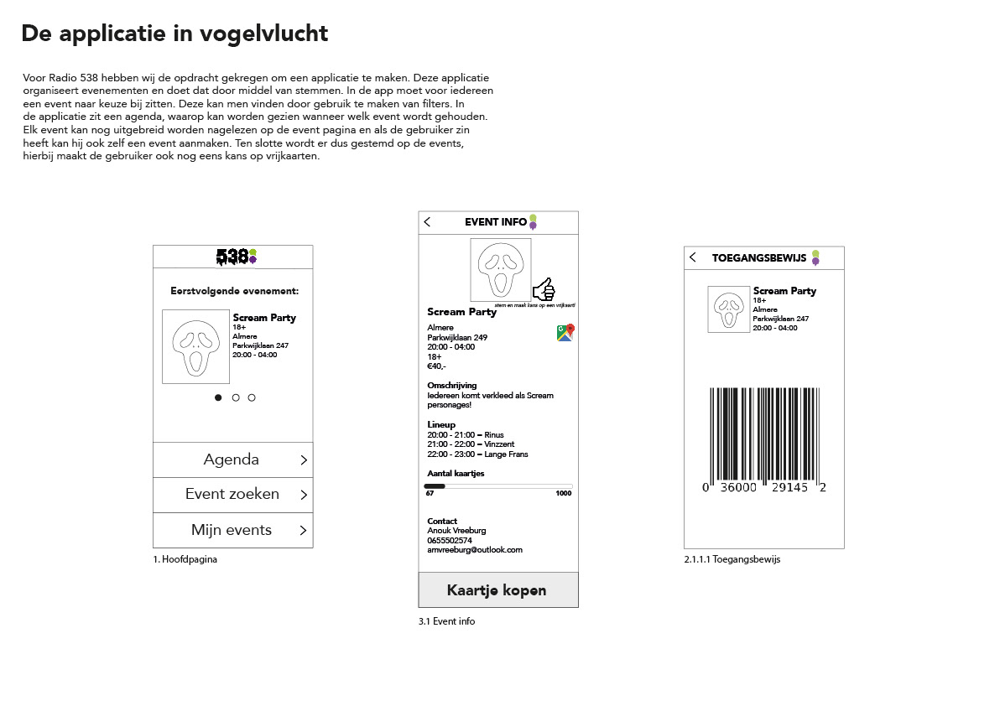
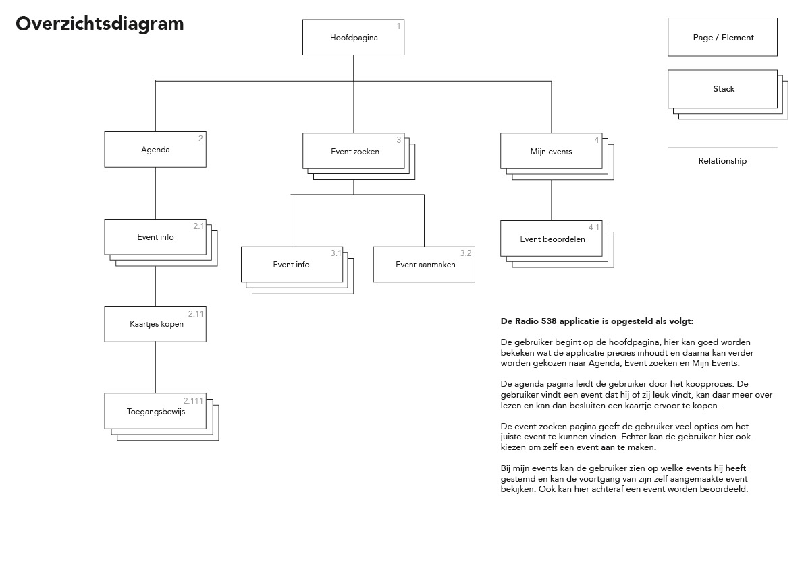
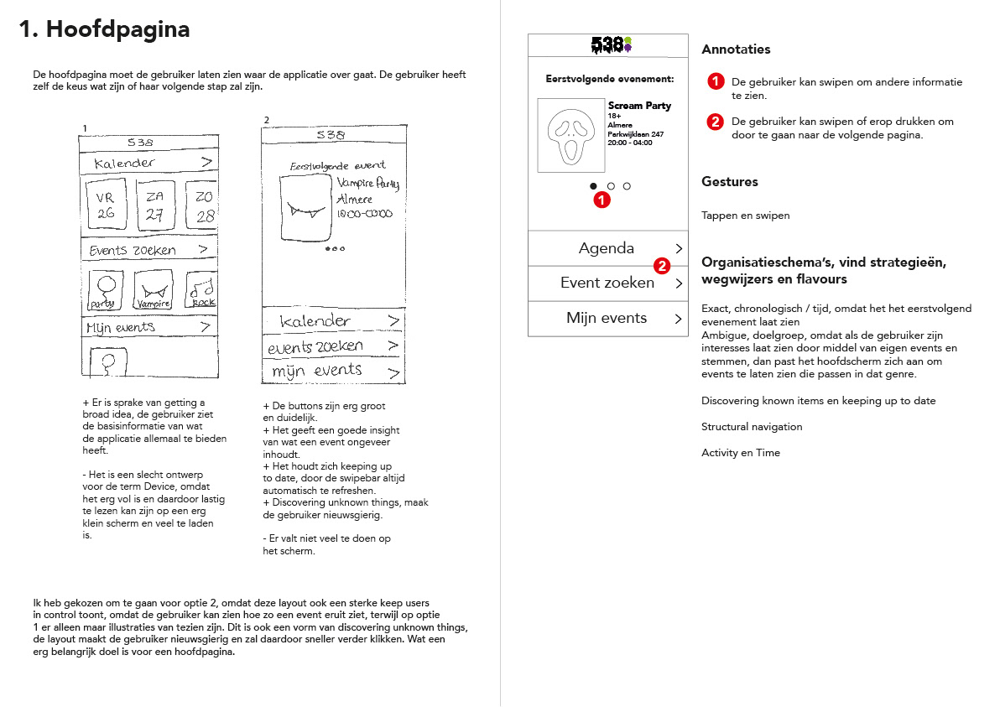
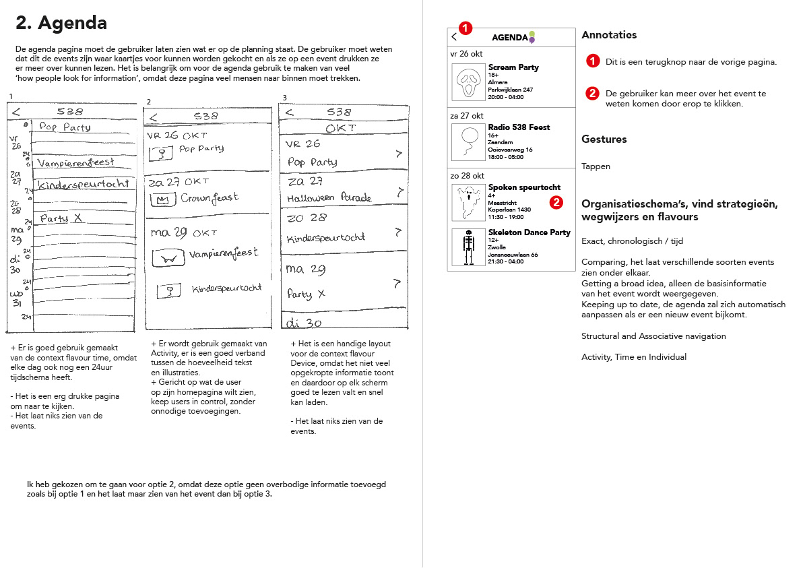
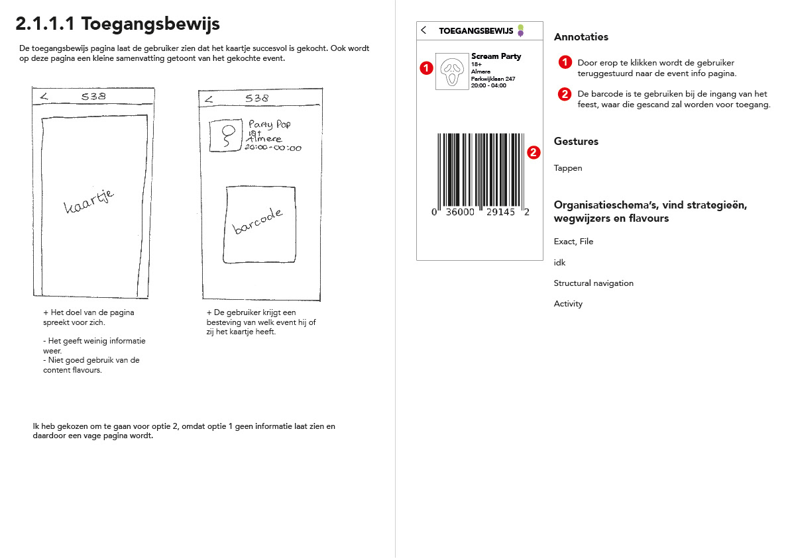
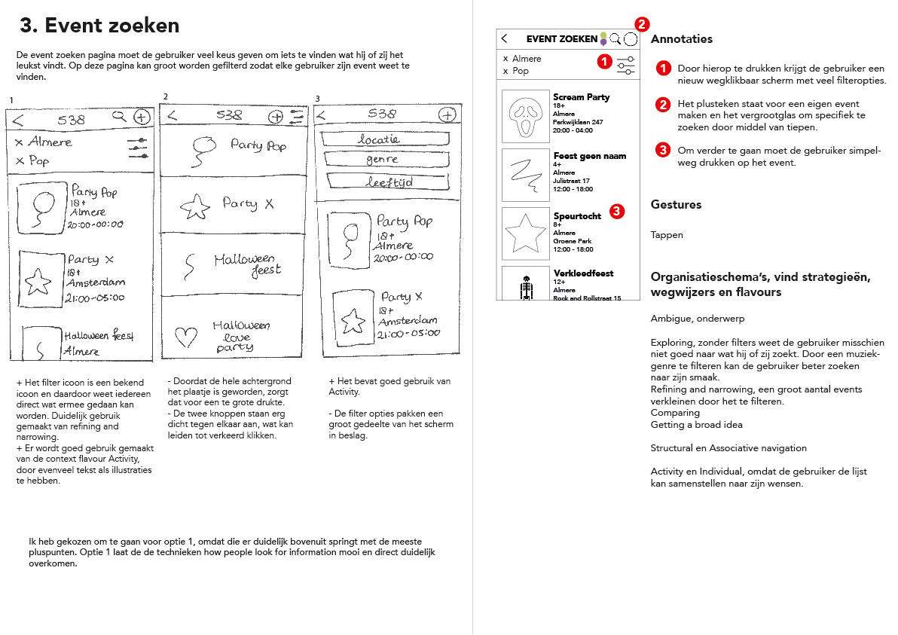
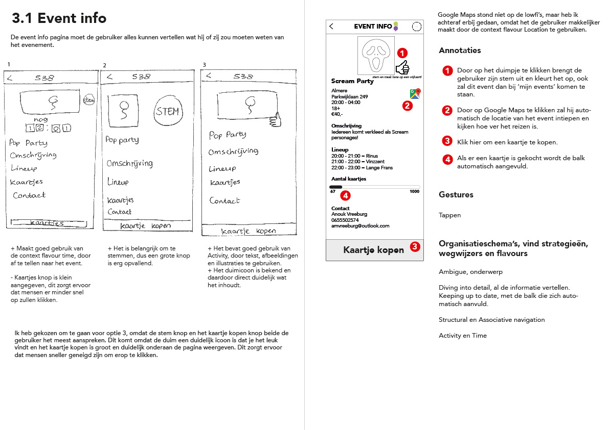
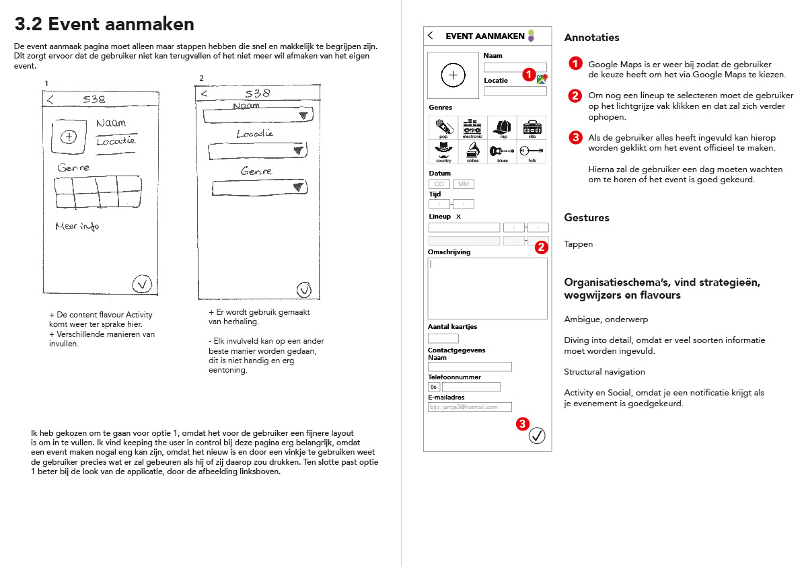

Assignment year 1: For the subject Information Architecture I learned how to properly design an application. I got given the subject of my app and was told to make a proper out of nothing application with it. This challenged me to think deeply about how an app is actually designed. Where to put down the buttons, how many screens does it need, how will the user react to this and that. With the right substantiation I managed to create a successful template, which was very educational.
       